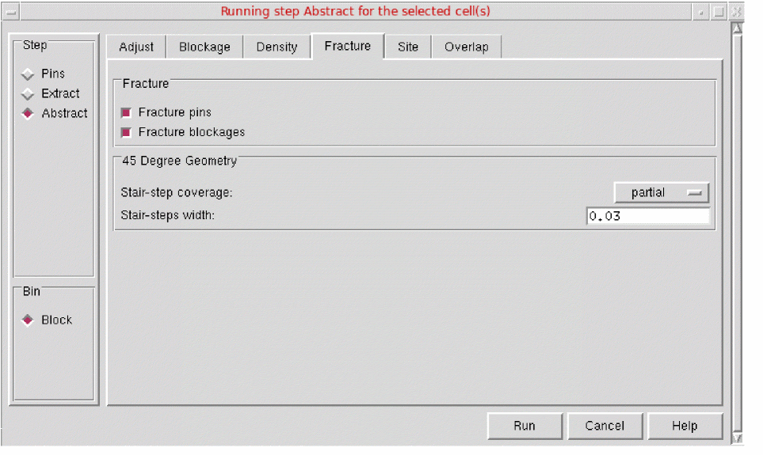

Fracturing Pins and Blockages
You can control whether or not pins and blockages are fractured depending on the PR system you are using. By using the options on the Fracture tab in the Running step Abstract form, you can also control the modeling of 45-degree geometry. These options are available to all bins.
To fracture pins and blockages:
-
Choose Flow – Abstract, and click the Fracture tab in the Running step Abstract form.
 - In the Fracture section, you can specify whether you want to fracture pins or blockages by using the options - Fracture pins and Fracture blockages. By default, both these options are disabled.
- In the 45-Degree Geometry section, you can convert a 45-degree geometry.
- Click Run.
Related Topics
Return to top